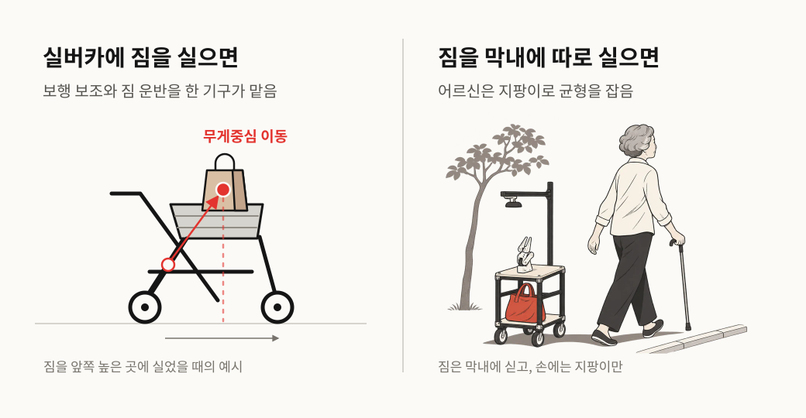
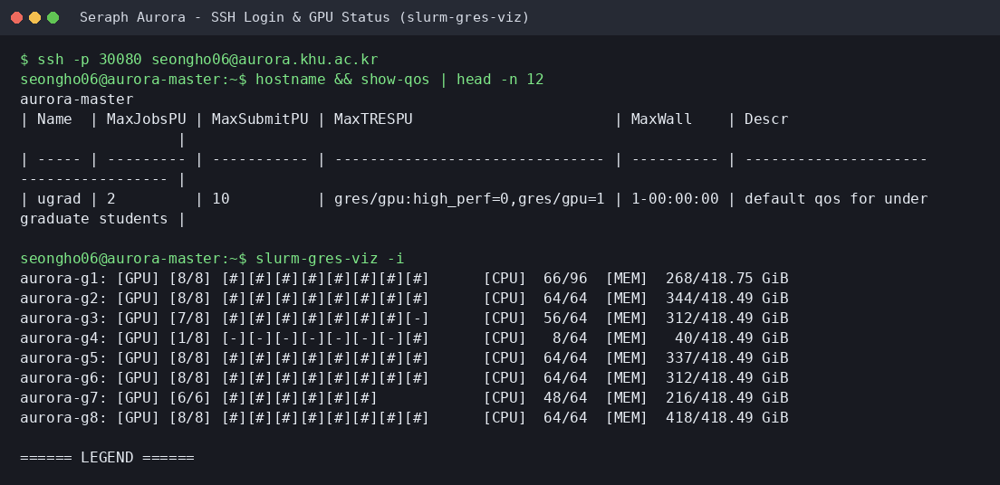
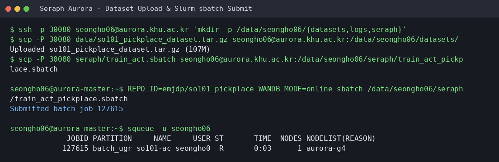
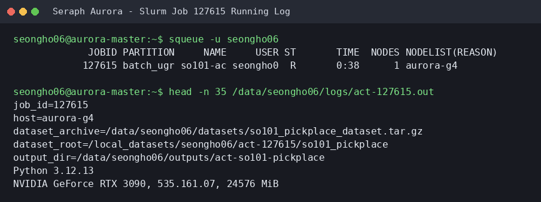
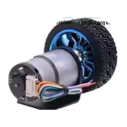

정리하면 이렇다. 안부는 마음먹지 않아도 전해져야 하고, 외출에는 안전망이 필요하고, 집 안의 짧은 동선에는 대신 움직여 줄 손이 필요하다.
“짐 카트 끌면 되지 않나요?”
이 이야기를 꺼내면 가장 먼저 듣는 말이다. 문제는 몸을 받치는 일과 짐을 옮기는 일이 기구 하나에 묶여 있다는 데 있다. 장바구니 트롤리를 한 손으로 끌면 몸이 한쪽으로 기울고, 넘어질 때 짚을 손이 하나뿐이다. 실버카 수납함에 짐을 실으면 무게중심이 앞과 위로 쏠려 문턱이나 내리막에서 넘어지기 쉽다.

실버카에 짐을 실으면 무게중심이 앞과 위로 올라간다. 막내는 짐을 따로 싣고 따라온다.
막내는 이 둘을 떼어 놓는다. 짐은 로봇이 싣고 따라오고, 어르신은 양손을 비운 채 지팡이에만 기대면 된다. 집 안에서는 물, 약, 안경을 가지러 일어나는 일을 대신하고, 밖에서는 외출과 귀가를 가족에게 알린다.
그래서 풀기로 한 문제
이미 있는 대안들은 저마다 막혀 있었다. 수동 보조기구는 짐을 옮기다 오히려 넘어질 위험을 키우고, 심부름이나 안부와는 상관이 없다. 상용 돌봄 로봇은 수천만 원대라 개인이 사기 어렵거나, 몸을 쓰는 도움 없이 말만 하는 스피커에 머문다. 스마트홈 기기는 앱이 여러 개이고 버튼은 작고 메뉴에 영어가 섞여 있어서, 결국 어르신 혼자서는 쓰지 않게 된다.
외출할 때 짐을 대신 싣고, 집 안의 짧은 심부름을 대신하고, 가족에게 안부와 위급 상황을 알리는 일을 싸고 친근한 기계 하나로 묶는다.
여기서 다섯 가지 요구사항이 나왔다.
외출 동반하중 분리 · 자율 추종
실내 심부름단안 VLM · 로봇팔 파지
안부 · SOS앱 외출 알림 · 폰 GPS
자율 · 안전 주행100 Hz 제어 · EKF · LiDAR
친화 인터페이스큰 타일 앱 · 3D 아바타
막내가 하는 일
막내(MAKNAE)는 Mobile Assistant for Kin’s Needs And Errands의 머리글자다. 집안의 막내 동생이나 손주처럼 곁에서 잔심부름을 하는 로봇이라는 뜻을 담았다.
가로 450 mm, 세로 400 mm, 높이 368 mm인 알루미늄 차체 위에 6축 로봇팔 SO-101과 1 m 높이의 L자 카메라 기둥을 올렸다. 바닥은 스프링으로 누르는 구동륜 둘과 캐스터 셋이 딛는다. 주행은 라즈베리 파이 5와 STM32가 맡고, 팔과 음성 대화, 아바타는 위에 올린 노트북이, 물건을 알아보는 일은 클라우드 모델이 맡는다. 아래 영상 다섯 편은 소리를 켜고 보면 설명이 함께 나온다.
말을 거는 얼굴, 3D 아바타
까만 기둥에 대고 말하는 건 어색하다. 그래서 막내에게 얼굴을 줬다. 화면 속 아바타가 목소리에 맞춰 입을 움직이고 표정을 바꾼다. 대화는 ElevenLabs Agents로 하고, 대화 중에 나온 부탁은 심부름이나 주행, 안내 도구 호출로 바로 이어진다. 표정 12종과 립싱크는 three-vrm으로 초당 30프레임에 그린다.
한 화면에서 보는 관제 대시보드
센서 값, 3D 디지털 트윈, 경로, 로봇팔 조작을 브라우저 한 화면에 모았다. 전방 C920 카메라가 읽은 마커 거리와 방위각, 좌우 바퀴 속도, 100 Hz IMU, LiFePO4 배터리 전압이 실시간으로 뜬다. 지도에서 ‘책상’이나 ‘현관’을 누르면 Nav2가 A*로 짠 우회 경로를 그리고 그대로 간다. 작업대를 내려다보는 화면을 클릭하거나 말로 시키면 로봇팔이 물건을 집는다.
지도를 그리고 피해 간다
360° 라이다(RPLIDAR C1)와 바퀴·자이로를 합친 EKF로 처음 가는 실내도 달리면서 지도를 그린다. 장애물 둘레에 여유를 둔 코스트맵 위에서 경로를 짜기 때문에 모서리를 부드럽게 돈다. 가는 길에 사람이 나타나면 그 자리에서 멈췄다가, 비켜 주면 다시 목적지로 간다.
말 한마디로 찾아 집는다
뎁스 카메라 없이 2만 원대 웹캠 한 대로 한다. 작업대 위를 내려다보는 C270이 탁자에 붙은 마커를 일곱 프레임 읽어 작업대 높이를 밀리미터 단위로 잰다. “약통 가져와”라고 하면 Gemini 4가 사진에서 처음 보는 물건의 위치를 찾고, GrabCut으로 물건의 긴 축을 구해 집게 각도를 맞춘다. 팔은 자기 무게로 처지는 만큼을 보정해서 집고, 어르신이 “줘”라고 하기 전에는 집게를 열지 않는다.
외출 알림과 SOS
어르신 앱은 큰 타일을 두 번 누르면 외출이 시작되고, 보호자 웹에 바로 소식이 간다. 외출 중에 로봇이 따라가던 마커를 10초 동안 놓치거나 어르신이 SOS를 누르면, 따로 GPS 모듈을 달지 않고 어르신 휴대폰의 위치를 보호자 지도에 띄운다. 위치 좌표는 SOS가 켜져 있는 동안만 저장되고 해제하면 바로 지워진다. 보호자 웹은 보기만 할 수 있고 로봇을 움직이지는 못한다.
실물 시연
아래는 실제 기체로 찍은 영상이다. 첫 번째는 말로 부르는 데서부터 손에 건네기까지 사람이 손대지 않은 자율 파지다. 무릎 위는 높이 마커가 없는 울퉁불퉁한 면이고, 투명 테이프는 학습 데이터에 없던 물건이다. 영상을 재생하면 지금 어느 단계인지 옆에 표시된다.
부른다“막내야, 투명 테이프 가져와다 줘.” 음성 대화가 심부름 도구를 부른다. 이미 다른 일을 하는 중이면 그 자리에서 거절한다.
찾는다팔을 접어 탑뷰 카메라 시야를 비우고, Gemini 4가 사진에서 테이프와 가운데 구멍을 찾는다. 사람 손이 겹쳐 있으면 멈추고 비켜 달라고 말한다.
계산한다사진 속 좌표를 팔 좌표로 바꾸고 닿을 수 있는 자리인지 확인한다. 다른 물건을 치지 않는 높이로 먼저 다가간다.
집는다팔이 제 무게로 처지는 5~9 mm를 보정하며 천천히 내려가 고정 손가락을 구멍에 넣고 문다. 빈손이면 3 mm 더 내려가 다시 집는다.
들고 기다린다들어 올린 채 200 ms마다 물건이 빠지지 않았는지 본다. “줘”라는 말이 나오기 전에는 집게를 열지 않는다.
건넨다“줘”에 맞춰 집게를 열어 손에 놓고, 팔을 접어 대기 자세로 돌아간다.
다음은 냉장고 위의 두유를 침대 곁까지 가져다주는 전체 동선이다. 이 영상은 사용 장면을 보여 주려고 실제 기체로 재현한 것이다. 마커에 맞춰 다가가기, 처음 보는 물건 집기, 출발한 자리로 돌아오기는 각각 자율로 확인했지만, 이 셋을 한 번에 잇는 일은 아직 남아 있다. 도킹할 때 생기는 몇 cm 오차를 팔의 작업 반경 30 cm 안에서 매끄럽게 받아 주는 것이 다음 과제다.
냉장고 앞 이동 → 두유 팩 집기 → 들고 침대로 → 손에 건네기
부스에서는 사람이 마커를 들고 걸으면 막내가 따라갔다. 추적을 놓치자 어르신 폰과 보호자 태블릿에 SOS가 동시에 떴다. 방문객 얼굴은 흐리게 처리했다.
전시장 바닥에서 마커를 따라 걷는 막내와 실시간 디지털 트윈
추적을 놓치자 어르신 폰과 보호자 태블릿에 함께 뜬 SOS
여섯 달의 기록
한 번에 다 만들려고 하지 않았다. 중요한 기능부터 하나씩 실물로 확인하고, 막힌 곳이 나오면 구조를 바꿨다. 아래 막대는 단계별로 무엇이 막혔고 무엇으로 풀었는지를 기간과 함께 보여 준다.
처음부터 완성형을 노리지 않았다. 집에 있던 440×360×540 mm짜리 2단 철망 트롤리를 뒤집어 드릴로 브래킷 구멍을 내고, 모터와 구동륜을 달았다. 배선 끝은 페룰 단자로 압착해 접촉 불량을 막았다. 차체를 제대로 만들기 전에 구동, 엔코더, 사람 따라가기까지 핵심 파이프라인이 실물에서 도는지부터 보려는 PoC였다.
ESP32-S3 보드에 붙은 작은 TFT 화면에 좌우 목표 속도와 엔코더로 잰 실제 속도를 띄웠다. 따로 모니터를 들고 다니지 않아도 달리면서 바로 볼 수 있었다. PWM을 조금씩 올려 바퀴가 움직이기 시작하는 지점(좌우 50~56)을 찾아 피드포워드로 보정하고, 목표 250에서 좌우 엔코더가 따라오는 걸 확인한 뒤 1 m 직진 시험으로 넘어갔다.
엔코더 틱은 좌우가 똑같은데 차체는 왼쪽으로 빗나갔다. 바닥에 줄자를 대고 재 보니 87.8 cm 나가는 동안 왼쪽으로 40 cm 밀렸다. 각도로 24.5°다.
범인은 1.2 mm 철망이었다. 구동 토크의 반력을 받은 철망이 볼트 근처에서 위로 휘면서 바퀴가 바닥을 누르는 힘이 줄었고, 바퀴가 헛돌았다. FEA로 굽힘을 해석해 보니 그대로 나왔다. 본체는 2020 알루미늄 프로파일 프레임에 스프링 현가를 넣어 다시 짜기로 했다.
트롤리 위에 C920 카메라, 비상정지 버튼, SO-101 팔을 임시로 올리고, Gazebo Harmonic에서 여러 마커에 맞춰 정렬한 뒤 물건을 집는 흐름을 시뮬레이션했다. 자동 테스트 78개를 통과했다. 이때 FastDDS 네트워크 설정을 고정하지 않으면 카메라가 30 Hz에서 4 Hz로 떨어지는 함정을 하나 잡았다.
체커보드를 여러 장 찍어 C920의 내부 파라미터와 왜곡 계수를 구했다. 이게 있어야 마커 크기로 거리를 잴 수 있다. 720p 30 fps 단안 카메라로 종이 ArUco 마커의 3D 거리와 각도를 추정해 그대로 따라 달렸다. 비싼 뎁스 카메라 없이 사람을 따라가는 핵심 파이프라인은 이걸로 확인됐다.
본체 제어기는 안전이 먼저다. 7월 2일에 미리 사 둔 NUCLEO-F446RE(39,600원)로 실시간 제어와 하드웨어 안전 계층을 다시 세웠다. 솔직히 ESP32에서도 micro-ROS와 FreeRTOS는 돈다. 하드웨어 엔코더 카운터와 고급 제어 타이머, 정밀한 ADC를 쓰고 싶었고, CubeMX로 클럭을 직접 잡아 보는 일은 아두이노에서는 해 보지 못한 재미였다.
ESP32 PoC
STM32 본체
잰 값
실행 구조
단일 loop()에 화면·제어·통신 혼재
정적 FreeRTOS + TIM6 100 Hz 직결
21분 오버런 0
통신 · 엔코더
USB-CDC 단일 포트 · 입력 필터 없음
USART1 DMA 직결 · TIM2/3 ×4 필터
RTT 2.54 ms · ≤1 tick
하드웨어 안전
소프트웨어 타임아웃(millis)만 의존
독립 워치독(IWDG) + TIM1 PWM 차단
300 ms 자동 리셋
제어 · 센서
임의 보정(×0.70) · IMU/배터리 없음
PI+FF · SPI2 IMU · ADC+VREFINT
속도 오차 0.137%
제어 인터럽트의 최악 실행 시간은 46.7 µs로 10 ms 주기의 0.47 %다. 실행 중 동적 할당은 0 byte. 921.6 kbps DMA로 600초 동안 32,072건을 주고받아 하나도 잃지 않았고, 제어가 멈추면 300.2 ms 만에 워치독이 모터 출력을 끊는다.
처음에는 모방학습(ACT) 하나로 실내 심부름을 다 풀 생각이었다. LeRobot 0.6.1로 시범 동작을 70번 직접 녹화하고, 학교 대여 GPU 클러스터 세라프(Seraph Aurora, RTX 3090)에 Slurm 작업으로 올려 10만 스텝을 학습했다. 학습한 정책은 “공을 노란 그릇에” 같은 과제를 해냈다.
학습한 ACT 정책이 “공을 노란 그릇에” 과제를 수행
새벽 2시 50분, 시범 동작 녹화

학교 대여 GPU 클러스터 세라프(Seraph Aurora) 학부생 할당 현황

데이터셋 업로드와 Slurm 학습 작업 제출

세라프 aurora-g4(RTX 3090 24 GB) 학습 실행 로그
Weights & Biases — 세라프 ACT 10만 스텝 학습 곡선 (loss 0.055)
그런데 카메라 각도가 1 cm만 달라져도, 햇빛이나 노출이 조금만 바뀌어도 무너졌다. 학습 데이터에 없던 약통이나 물병, 안경은 아예 집지 못했다. 어르신 집마다 물건이 다르고 조명도 다르다. 여기서 구조를 바꾸기로 했다. 무엇으로 바꿨는지는 11월 4일에 적었다.
코너 브래킷 68개로 알루미늄 직육면체 골격을 세웠다. 하부는 세 칸 격자로 나누고 모서리마다 캐스터 플레이트를 달았다. 프로파일 21본으로 짠 골격은 철망처럼 휘지 않았고, 바닥에서 비틀림 없이 부드럽게 굴렀다. 그날 새벽 0시부터 6시 사이에 찍은 사진만 17장이다.
홀 엔코더 출력이 오픈드레인이라 신호를 잡으려면 풀업·풀다운 저항이 필요했다. 미니 브레드보드에 저항을 빼곡히 꽂고, STM32의 TIM2/3을 하드웨어 엔코더 모드로 설정한 뒤 바퀴를 손으로 정확히 한 바퀴 돌려 틱 수를 셌다. 한 바퀴에 2,475.5틱, 돌렸다 되돌린 오차는 왼쪽 0틱, 오른쪽 1틱이었다.
8월 18일 NUCLEO 보드 단독으로 시작해 100 Hz PI+FF 속도 제어를 올리고, 22일에는 라즈베리 파이 5의 GPIO UART와 921,600 bps로 직결했다. 600초 연속 전송에서 유실은 0, 왕복은 2.54 ms였다. 바닥에 테이프로 삼각형을 붙여 놓고 돌면서 오도메트리를 맞췄다. 유효 바퀴 반지름은 0.04979 m, 바퀴 사이 거리는 0.30912 m가 나왔다.
마커를 따라 실주행하던 중 과전류 사고가 났다. 모터 드라이버 MDD3A가 타고, 모터 하나와 엔코더 하나(출력이 0.4 V에 붙어 버렸다)도 같이 나갔다. 눈물을 흘리며 다시 산 값이 41,091원이다. 이후 5 A 퓨즈와 역극성 방지 다이오드(SR540)를 넣고 MCU 전원을 따로 뺐다. 이 일이 정식 인터페이스 보드를 설계하게 된 계기다.
네이버페이 + AliExpress (사고 복구)2026-08-30 ~ 09-01
Cytron MDD3A (2차 구매)과전류 소손 교체14,410원

JGB37-520 홀 엔코더 모터 ×2모터 1 + 엔코더(0.4 V 고착) 교체26,681원
브레드보드는 진동만 받아도 접점이 떨어졌다. 그 탓에 PI 튜닝 1차 결과를 통째로 버렸다. 그래서 KiCad로 인터페이스 보드를 그렸다.
모터의 큰 전류와 ADC·엔코더 신호는 스타 그라운드로 갈라놓았다. 전원은 RECOM R-78E5.0 벅, 5 A 유리 퓨즈, SR540 역극성 다이오드로 지킨다. 배터리 전압은 1 % 저항으로 나눠 읽고, 좌우 엔코더 커넥터는 4핀과 5핀으로 핀 수를 달리해서 거꾸로 꽂을 수 없게 했다.
탑뷰 기둥과 상판은 손 드릴로는 정밀도를 맞출 수 없었다. 400×450×15 mm 합판에 Ø5.5 구멍 17개를 대칭으로 배치한 3각법 도면과 CNC 가공용 DXF·DWG 파일을 직접 만들어 아는 공방에 CNC 가공을 맡겼고, 1,000 mm와 600 mm 프로파일의 탭·렌치 구멍 가공은 스마트스토어에 23,500원을 주고 맡겼다. 이때 탑뷰용 Logitech C270(26,750원)과 JST-XH 하네스(25,220원)도 샀다.
외출 중 위치를 알려면 GPS와 LTE 모듈, 통신 요금제가 필요하다. 대신 어르신이 이미 가진 휴대폰의 위치를 쓰기로 했다.
어르신 앱의 규칙은 단순하게 잡았다. 본문 글자는 20 sp 이상, 핵심은 28 sp 이상, 타일은 140 dp 이상, 그리고 SOS 말고는 영어를 보이지 않게. 장소 등록이나 연결 설정처럼 복잡한 일은 보호자용 설정에 숨겼다. 갤럭시 S26 울트라에서 잰 SOS 응답(ACK)은 8.3~16.5 ms, 저장해 둔 위치를 읽는 데는 10~19 ms가 걸렸다.
CNC 가공해 온 합판 상판에 SO-101 팔, 1 m L자 기둥, C270 탑뷰 카메라, 보조배터리 전원을 올렸다. C270은 체커보드 26장으로 보정해 재투영 오차 0.11 px를 얻었다. 팔 전원은 UGREEN 100 W 보조배터리에서 PD 20 V를 받아 12 V 5 A로 내린다. 기둥과 상판 브래킷은 MISUMI 2차 주문(44,806원)으로 보강했다.
ST-LINK USB를 꽂았을 때만 부팅되고, 배터리만으로 켜면 MCU가 멈췄다. 원인은 클럭이었다. 단독으로 켜면 ST-LINK가 주는 클럭(MCO)이 100 ms보다 늦게 떠서 외부 클럭(HSE) 대기 시간을 넘겼다. 부팅할 때 HSE를 최대 3초까지 기다리도록 초기화 코드를 고쳤다. 통전 시험을 하면서 빠진 점퍼 세 곳과 에나멜선 사이의 간헐 단락도 찾아냈다.
같은 바닥에서 제자리로 한 바퀴 돌렸더니 바퀴는 315°, 자이로는 361°라고 했다. 이 정도로 방향이 틀어지면 앞으로는 잘 가도 출발한 자리로 돌아오지 못한다.
자이로의 원시 바이어스는 +1.137 °/s였다. 가만 둬도 1분에 68° 돈다는 뜻이다. 로봇이 2초 이상 서 있을 때마다 바이어스를 다시 추정하게 하고, 30 Hz EKF에서 전진 속도는 바퀴를, 회전은 자이로를 믿도록 공분산을 줬다. 그 위에 라이다 2D SLAM을 얹었다. 이제 주행 중 앞에 장애물이 있으면 멈추고 “지나갈게요”라고 말한다.
만들고 보니 어르신은 허공이나 카트를 바라보고 말을 해야 했다. 노년층은 상대가 사람 얼굴에 가까울수록 신뢰와 호감을 높게 평가한다는 국내 연구가 있고,5 고령자 약 60 %가 사람 얼굴을 한 로봇을 골랐다는 Georgia Tech의 연구도 있다.6 그래서 표정이 있는 3D 아바타를 붙였다.
“막내야, 장기자랑 해봐”라고 하면 아바타가 춤을 추고 로봇팔이 박자에 맞춰 함께 움직인다.
“막내야, 장기자랑 해봐”. 아바타와 SO-101 팔이 함께 춤춘다.
안을 들여다보면
막내는 다섯 층으로 나뉜다. 맨 아래는 차체와 전원, 그 위에 바퀴를 10 ms마다 제어하는 STM32 펌웨어, 라즈베리 파이 5의 ROS 2, 물건을 찾고 집는 시각·팔 계층, 맨 위에 어르신과 보호자가 만나는 앱·웹·아바타가 있다.
센서에서 들어온 값이 인지를 거쳐 속도 명령이 되고, twist_mux가 우선순위로 하나를 고르면 micro-ROS를 타고 STM32로 내려간다. 바퀴 오도메트리와 IMU는 EKF와 SLAM으로 다시 올라온다.
STM32 펌웨어
실행 중 동적 할당이 없는 정적 FreeRTOS 위에서, 하드웨어 타이머가 10 ms마다 제어 태스크를 깨운다. 모터 PWM은 18 kHz로 올려 귀에 들리는 소리를 없앴고, 엔코더는 타이머가 직접 센다. 메인 클럭과 따로 도는 독립 워치독이 제어가 멈추면 출력을 끊는다.
주변장치
핀
하는 일
TIM1 CH1~4
PA8~PA11
18 kHz PWM (4,667 step) + BDTR.MOE 차단
TIM2 / TIM3
PA0·PA1 / PA6·PA7
좌·우 ×4 직교 엔코더 + 디지털 필터 IC1F=4
TIM6
Internal 100 Hz
ControlTask(P5) 직접 알림 — WCET 46.7 µs
USART1 / 2
PB6·PB7 / PA2·PA3
921,600 bps DMA micro-ROS / 230,400 디버그
SPI2 + EXTI0
PB12~15 / PB0
ICM-42688-P IMU 100 Hz DRDY + DWT 보정
ADC1 + IWDG
PA4 + 내부 VREFINT
분압비 6.02 배터리(+0.3%) · 300.2 ms 워치독
네 개의 경계
앱, 클라우드, 노트북 중 어느 쪽 연결이 끊겨도 맨 아래 주행 안전 루프는 멈추지 않는다. 경계마다 책임과 실패를 나눠 두었다.
안전은 상태머신이 강제한다
외출·SOS 판단과 심부름 모두 예외가 생기면 멈추거나 거절하는 쪽이 먼저다. 언어 모델이 무엇을 말하든 상태머신이 허락하지 않은 동작은 일어나지 않는다.